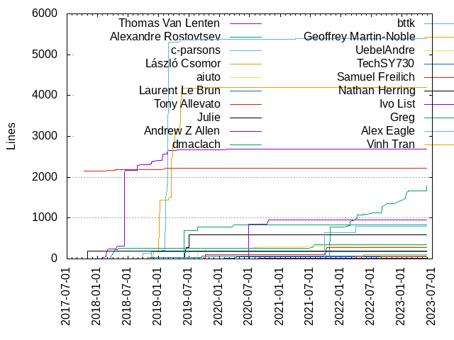
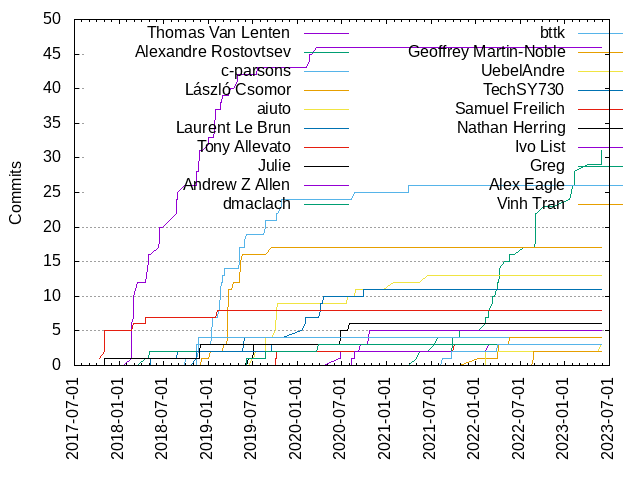

Authors
| Author | Commits (%) | + lines | - lines | First commit | Last commit | Age | Active days | # by commits |
|---|
| Thomas Van Lenten | 46 (19.25%) | 2691 | 2492 | 2018-02-20 | 2020-03-19 | 757 days, 23:36:27 | 29 | 1 |
| c-parsons | 26 (10.88%) | 5385 | 289 | 2018-09-28 | 2021-03-31 | 915 days, 6:56:42 | 24 | 2 |
| Alexandre Rostovtsev | 19 (7.95%) | 1207 | 589 | 2021-05-03 | 2022-09-01 | 485 days, 21:44:55 | 15 | 3 |
| László Csomor | 17 (7.11%) | 4202 | 2188 | 2018-12-04 | 2019-09-17 | 286 days, 21:49:14 | 14 | 4 |
| aiuto | 13 (5.44%) | 314 | 93 | 2019-07-02 | 2021-06-16 | 715 days, 0:24:11 | 12 | 5 |
| Laurent Le Brun | 11 (4.60%) | 50 | 360 | 2018-05-10 | 2020-09-25 | 869 days, 3:51:00 | 10 | 6 |
| Tony Allevato | 8 (3.35%) | 2226 | 20 | 2017-10-10 | 2019-02-08 | 486 days, 1:37:55 | 4 | 7 |
| Julie | 6 (2.51%) | 595 | 8 | 2019-06-14 | 2020-07-31 | 412 days, 21:16:25 | 4 | 8 |
| Andrew Z Allen | 5 (2.09%) | 947 | 24 | 2020-06-19 | 2020-10-21 | 124 days, 12:02:22 | 5 | 9 |
| dmaclach | 4 (1.67%) | 341 | 84 | 2018-04-17 | 2021-07-26 | 1196 days, 2:52:50 | 4 | 10 |
| bttk | 4 (1.67%) | 168 | 155 | 2018-11-13 | 2018-11-20 | 7 days, 11:31:51 | 3 | 11 |
| Geoffrey Martin-Noble | 4 (1.67%) | 104 | 121 | 2022-01-12 | 2022-05-17 | 124 days, 19:57:33 | 4 | 12 |
| TechSY730 | 3 (1.26%) | 66 | 5 | 2018-11-12 | 2019-09-17 | 308 days, 20:37:15 | 2 | 13 |
| Samuel Freilich | 3 (1.26%) | 269 | 33 | 2019-10-04 | 2021-10-04 | 731 days, 0:44:05 | 3 | 14 |
| Nathan Herring | 3 (1.26%) | 195 | 3 | 2017-10-31 | 2018-11-29 | 393 days, 11:58:40 | 3 | 15 |
| Ivo List | 3 (1.26%) | 20 | 11 | 2020-08-11 | 2022-02-23 | 561 days, 0:51:07 | 3 | 16 |
| Greg | 3 (1.26%) | 833 | 17 | 2019-06-05 | 2020-03-25 | 293 days, 20:25:33 | 3 | 17 |
| Alex Eagle | 3 (1.26%) | 803 | 2013 | 2021-08-18 | 2022-03-29 | 223 days, 3:50:24 | 3 | 18 |
| Vinh Tran | 2 (0.84%) | 47 | 10 | 2022-08-25 | 2022-08-26 | 15:33:53 | 2 | 19 |
| UebelAndre | 2 (0.84%) | 11 | 7 | 2022-02-10 | 2022-02-10 | 0:54:42 | 1 | 20 |
These didn't make it to the top: Kevin Kress, Jingwen, Florian Weikert, Dmitry Lomov, Derek Cormier, David Sanderson, oquenchil, nickgooding, kwasimensah, katre, irengrig, hchsiao, easy, alandonovan, Yun Peng, Yesudeep Mangalapilly, Yannic, Vertexwahn, Thaler Benedek, Taras Tsugrii, Sergio Campamá, Samuel Giddins, Robbert van Ginkel, River, Philipp Wollermann, Olek Wojnar, Nicholas Titcombe, Matt Passell, Marcel Hlopko, Marc Plano-Lesay, Mansur, Kelly Campbell, Justin Ko, Julio Merino, Josh Morton, Jonathan B Coe, Jay Conrod, Jakob Buchgraber, Ian Cottrell, Gabe Giosia, Fabian Meumertzheim, Dave Lee, Daniel Wagner-Hall, Christopher Sauer, Christian Blichmann, Bor Kae Hwang, Bocete, Barry McNamara
Only top 20 authors shown
Only top 20 authors shown
| Month | Author | Commits (%) | Next top 5 | Number of authors |
|---|
| 2022-09 | Alexandre Rostovtsev | 2 (100.00% of 2) | | 1 |
| 2022-08 | Vinh Tran | 2 (50.00% of 4) | nickgooding, hchsiao | 3 |
| 2022-07 | Alexandre Rostovtsev | 1 (100.00% of 1) | | 1 |
| 2022-06 | Derek Cormier | 2 (100.00% of 2) | | 1 |
| 2022-05 | Geoffrey Martin-Noble | 1 (33.33% of 3) | Fabian Meumertzheim, Alexandre Rostovtsev | 3 |
| 2022-04 | Alexandre Rostovtsev | 4 (57.14% of 7) | Vertexwahn, Kevin Kress, Geoffrey Martin-Noble | 4 |
| 2022-03 | Alexandre Rostovtsev | 3 (50.00% of 6) | Geoffrey Martin-Noble, Barry McNamara, Alex Eagle | 4 |
| 2022-02 | Alexandre Rostovtsev | 3 (42.86% of 7) | UebelAndre, Kevin Kress, Ivo List | 4 |
| 2022-01 | Geoffrey Martin-Noble | 1 (100.00% of 1) | | 1 |
| 2021-10 | Yesudeep Mangalapilly | 1 (33.33% of 3) | Samuel Freilich, Alexandre Rostovtsev | 3 |
| 2021-09 | Alexandre Rostovtsev | 2 (33.33% of 6) | Thaler Benedek, Mansur, Daniel Wagner-Hall, Alex Eagle | 5 |
| 2021-08 | Philipp Wollermann | 1 (50.00% of 2) | Alex Eagle | 2 |
| 2021-07 | dmaclach | 2 (100.00% of 2) | | 1 |
| 2021-06 | aiuto | 1 (100.00% of 1) | | 1 |
| 2021-05 | Alexandre Rostovtsev | 2 (100.00% of 2) | | 1 |
| 2021-03 | c-parsons | 1 (33.33% of 3) | Olek Wojnar, Christopher Sauer | 3 |
| 2021-01 | aiuto | 1 (100.00% of 1) | | 1 |
| 2020-12 | alandonovan | 1 (100.00% of 1) | | 1 |
| 2020-11 | David Sanderson | 1 (100.00% of 1) | | 1 |
| 2020-10 | Andrew Z Allen | 2 (66.67% of 3) | River | 2 |
| 2020-09 | Samuel Giddins | 1 (25.00% of 4) | Laurent Le Brun, David Sanderson, Andrew Z Allen | 4 |
| 2020-08 | Ivo List | 2 (40.00% of 5) | c-parsons, aiuto, Jonathan B Coe | 4 |
| 2020-07 | aiuto | 1 (25.00% of 4) | Yannic, Julie, Bocete | 4 |
| 2020-06 | Julie | 2 (50.00% of 4) | Andrew Z Allen | 2 |
| 2020-04 | Laurent Le Brun | 3 (75.00% of 4) | Robbert van Ginkel | 2 |
| 2020-03 | Thomas Van Lenten | 1 (50.00% of 2) | Greg | 2 |
| 2020-02 | Thomas Van Lenten | 2 (33.33% of 6) | Laurent Le Brun, irengrig, Bor Kae Hwang | 4 |
| 2020-01 | Laurent Le Brun | 1 (100.00% of 1) | | 1 |
| 2019-10 | aiuto | 5 (38.46% of 13) | c-parsons, Samuel Freilich, Marcel Hlopko, Marc Plano-Lesay, Gabe Giosia | 6 |
| 2019-09 | TechSY730 | 1 (50.00% of 2) | László Csomor | 2 |
| 2019-08 | c-parsons | 2 (28.57% of 7) | aiuto, easy, Greg, Florian Weikert | 5 |
| 2019-07 | aiuto | 2 (33.33% of 6) | Julie, kwasimensah, Thomas Van Lenten | 4 |
| 2019-06 | c-parsons | 1 (25.00% of 4) | Julie, Greg, Christian Blichmann | 4 |
| 2019-05 | c-parsons | 4 (30.77% of 13) | László Csomor, Thomas Van Lenten, Laurent Le Brun, Sergio Campamá | 5 |
| 2019-04 | Thomas Van Lenten | 1 (25.00% of 4) | Matt Passell, László Csomor, Justin Ko | 4 |
| 2019-03 | László Csomor | 9 (69.23% of 13) | katre, c-parsons, Florian Weikert, Dave Lee | 5 |
| 2019-02 | c-parsons | 6 (60.00% of 10) | Thomas Van Lenten, Tony Allevato, Dmitry Lomov | 4 |
| 2019-01 | Thomas Van Lenten | 6 (46.15% of 13) | c-parsons, Yun Peng, László Csomor, Josh Morton | 5 |
| 2018-12 | László Csomor | 1 (50.00% of 2) | Kelly Campbell | 2 |
| 2018-11 | Thomas Van Lenten | 5 (33.33% of 15) | bttk, c-parsons, TechSY730, Nathan Herring | 5 |
| 2018-10 | Julio Merino | 1 (100.00% of 1) | | 1 |
| 2018-09 | c-parsons | 1 (50.00% of 2) | Thomas Van Lenten | 2 |
| 2018-08 | Thomas Van Lenten | 4 (80.00% of 5) | Laurent Le Brun | 2 |
| 2018-07 | Thomas Van Lenten | 1 (100.00% of 1) | | 1 |
| 2018-06 | Thomas Van Lenten | 4 (80.00% of 5) | oquenchil | 2 |
| 2018-05 | Thomas Van Lenten | 2 (40.00% of 5) | dmaclach, Taras Tsugrii, Laurent Le Brun | 4 |
| 2018-04 | Thomas Van Lenten | 2 (40.00% of 5) | dmaclach, Tony Allevato, Nicholas Titcombe | 4 |
| 2018-03 | Thomas Van Lenten | 2 (100.00% of 2) | | 1 |
| 2018-02 | Thomas Van Lenten | 10 (90.91% of 11) | Jakob Buchgraber | 2 |
| 2018-01 | Jingwen | 1 (25.00% of 4) | Jay Conrod, Ian Cottrell, Dmitry Lomov | 4 |
| 2017-10 | Tony Allevato | 6 (75.00% of 8) | Nathan Herring, Jingwen | 3 |
| Year | Author | Commits (%) | Next top 5 | Number of authors |
|---|
| 2022 | Alexandre Rostovtsev | 14 (42.42% of 33) | Geoffrey Martin-Noble, Vinh Tran, UebelAndre, Kevin Kress, Derek Cormier | 13 |
| 2021 | Alexandre Rostovtsev | 5 (25.00% of 20) | dmaclach, aiuto, Alex Eagle, c-parsons, Yesudeep Mangalapilly | 13 |
| 2020 | Laurent Le Brun | 7 (20.00% of 35) | Andrew Z Allen, Thomas Van Lenten, Julie, aiuto, Ivo List | 18 |
| 2019 | c-parsons | 21 (24.71% of 85) | László Csomor, Thomas Van Lenten, aiuto, Julie, Samuel Freilich | 25 |
| 2018 | Thomas Van Lenten | 31 (53.45% of 58) | bttk, c-parsons, dmaclach, TechSY730, Nathan Herring | 19 |
| 2017 | Tony Allevato | 6 (75.00% of 8) | Nathan Herring, Jingwen | 3 |
| Domains | Total (%) |
|---|
| google.com | 140 (58.58%) |
|---|
| users.noreply.github.com | 41 (17.15%) |
|---|
| gmail.com | 33 (13.81%) |
|---|
| andrewzallen.com | 5 (2.09%) |
|---|
| aspect.dev | 3 (1.26%) |
|---|
| uebelandre.com | 2 (0.84%) |
|---|
| post.harvard.edu | 2 (0.84%) |
|---|
| yannic-bonenberger.com | 1 (0.42%) |
|---|
| vanginkels.com | 1 (0.42%) |
|---|
| umich.edu | 1 (0.42%) |
|---|